Snakes of Taiwan
58 living snake species are recorded in Taiwan in SnakeList: 22 venomous and 36 non-venomous, from 8 families.
- 58living species
- 8families
Danger to people · tap a number to show only those snakes
- 0giant constrictors
Harmful = dangerously venomous + giant constrictors. Harmless = not venomous and not a giant constrictor. Mildly venomous snakes have no serious bites to people documented. Any snake can bite.
These totals count the unique living snake species SnakeList records in Taiwan. A species counts if it is recorded anywhere in the country, so not every snake lives in every part of it.
In SnakeList’s checklist filters
How many of the 58 living species here each filter in the SnakeList app picks out – tap a number to show only those snakes.
Snake family4 types, 8 families
Type
Family
Habitats14 habitat groups
Habitats are estimated from where each snake is recorded and what kind of snake it is, as in the app; a snake can count in several.
Characteristics22 venomous, 3 constrictors
Constrictor and Non-constrictor count only snakes whose family or genus is documented as constricting or not; the rest are not documented.
Other filters1 popular, 7 rare
- 0invasive
- 0extinct
Species
Showing 58 species
 Annulated Sea SnakeHydrophis cyanocinctus
Annulated Sea SnakeHydrophis cyanocinctus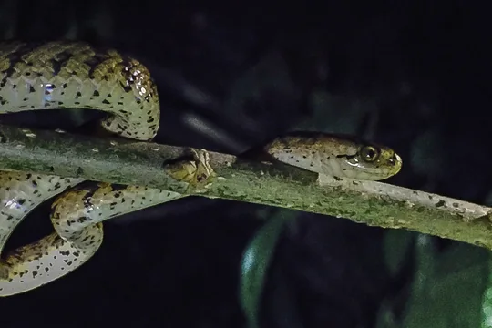
Atayal Slug-eating SnakePareas atayal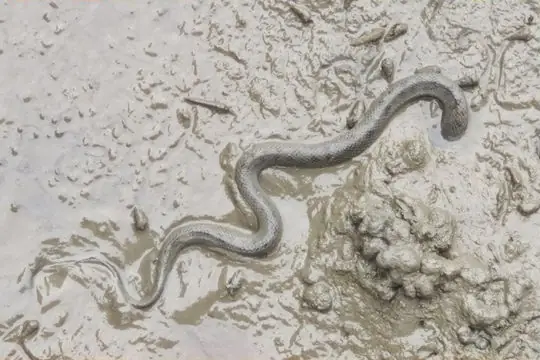
Bennett's Mud SnakeMyrrophis bennettii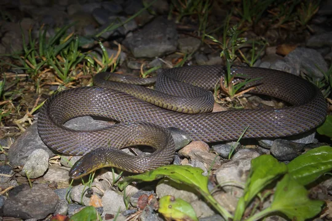
Black Odd-scaled SnakeAchalinus niger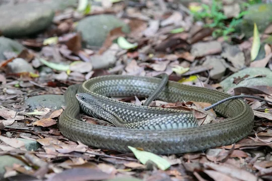
Black-striped Rat SnakePtyas dhumnades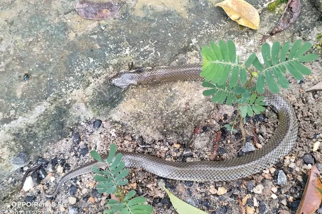
Boie's Mud SnakeHypsiscopus plumbea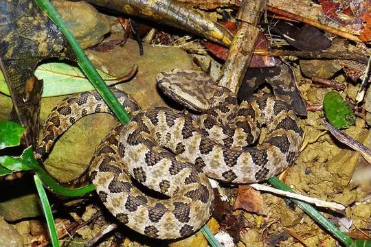
Brown Spotted PitviperProtobothrops mucrosquamatus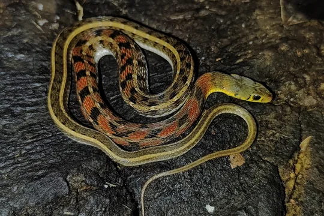
Buff Striped KeelbackAmphiesma stolatum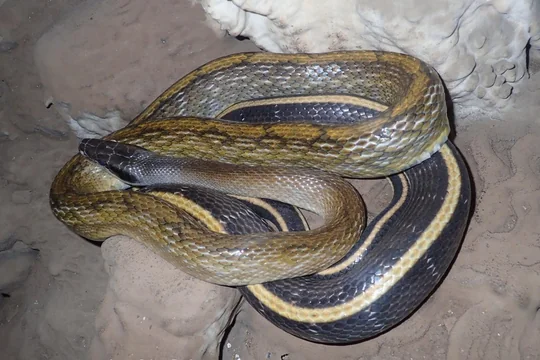
Cave RacerElaphe taeniura Checkered KeelbackXenochrophis piscator
Checkered KeelbackXenochrophis piscator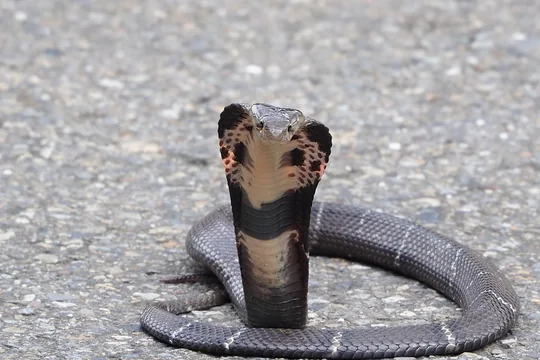
Chinese CobraNaja atra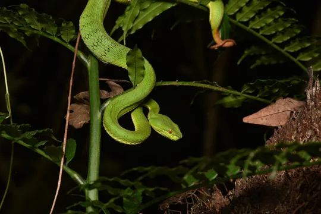
Chinese Green Tree ViperTrimeresurus stejnegeri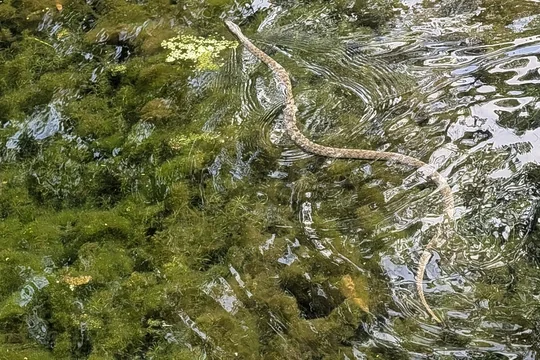
Chinese Keelback Water SnakeTrimerodytes percarinatus Chinese Many-tooth SnakeSibynophis chinensis
Chinese Many-tooth SnakeSibynophis chinensis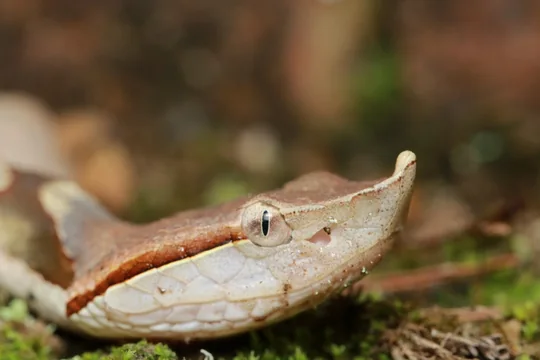
Chinese MoccasinDeinagkistrodon acutus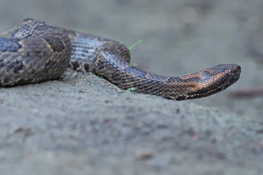
Chinese Mountain Pit ViperOvophis monticola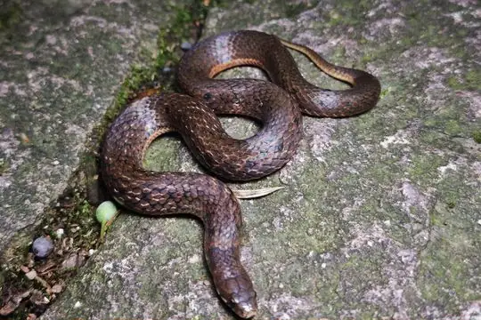
Chinese Mountain SnakePlagiopholis styani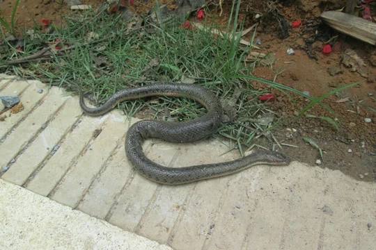
Chinese Mud SnakeMyrrophis chinensis Chinese Sea SnakeLaticauda semifasciata
Chinese Sea SnakeLaticauda semifasciata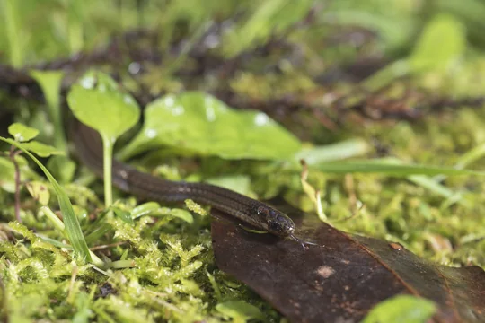
Collared Reed Snake (pavimentata)Calamaria pavimentata Common Many-tooth SnakeSibynophis collaris
Common Many-tooth SnakeSibynophis collaris Common Mock ViperPsammodynastes pulverulentus
Common Mock ViperPsammodynastes pulverulentus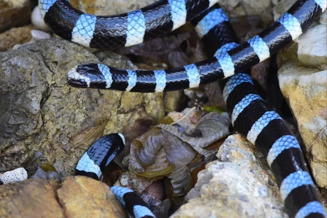
Common Sea KraitLaticauda laticaudata Eastern Russel's ViperDaboia siamensis
Eastern Russel's ViperDaboia siamensis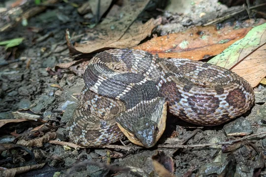
False HabuPseudagkistrodon rudis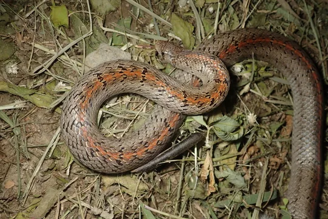
Formosa Kukri SnakeOligodon formosanus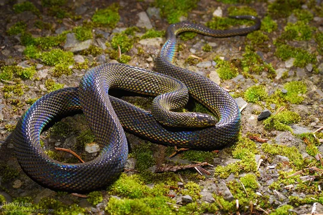
Formosa Odd-scaled SnakeAchalinus formosanus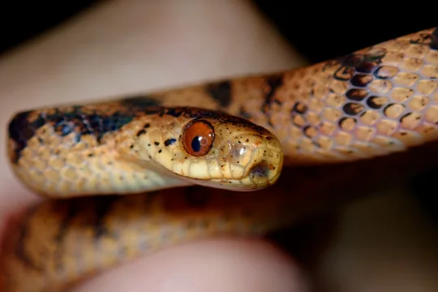
Formosa Slug SnakePareas formosensis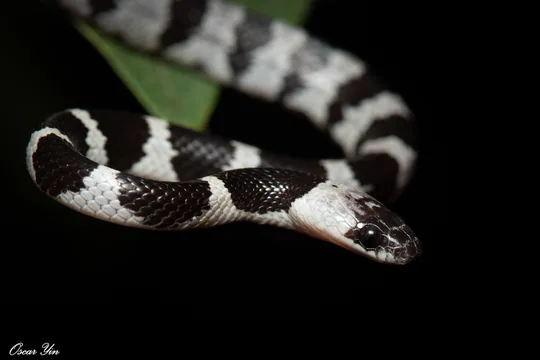
Formosa Wolf SnakeLycodon ruhstrati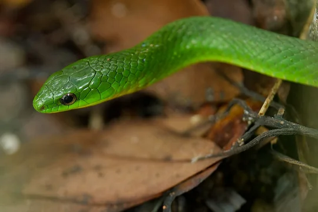
Greater Green SnakePtyas major- No photo yetHatori's Coral SnakeSinomicrurus hatori
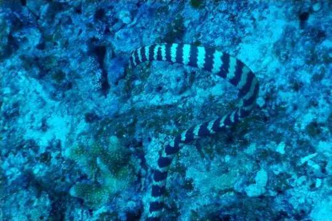
Ijima's Sea SnakeEmydocephalus ijimae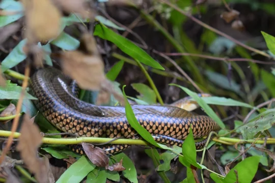
Indo-Chinese Rat SnakePtyas korros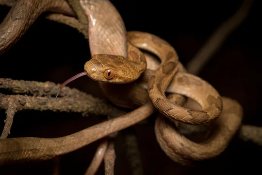
Kelung Cat SnakeBoiga kraepelini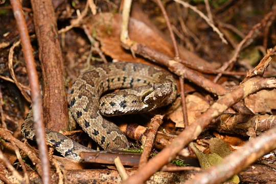
Kikuchi HabuTrimeresurus gracilis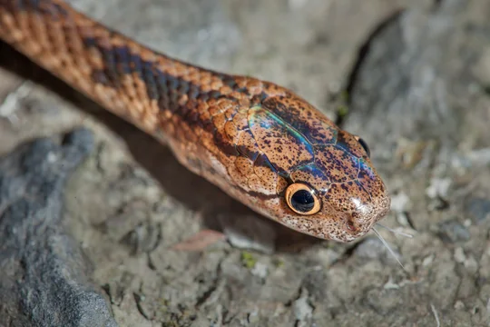
Koma's Formosa Slug SnakePareas komaii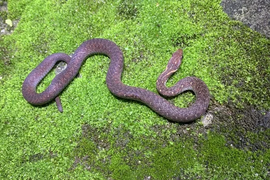
Kosempo KeelbackHebius sauteri- No photo yetKoshun Worm SnakeArgyrophis koshunensis
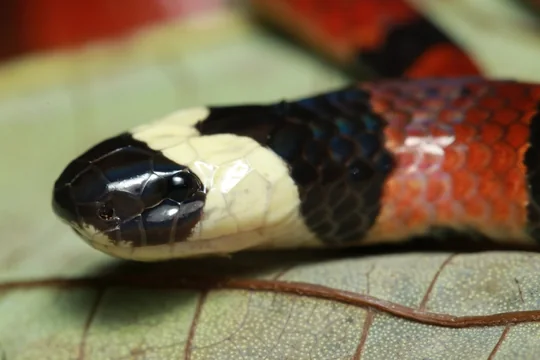
MacLelland's Coral SnakeSinomicrurus macclellandi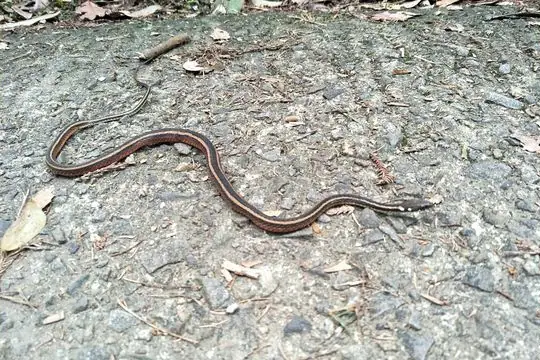
Maki's KeelbackHebius miyajimae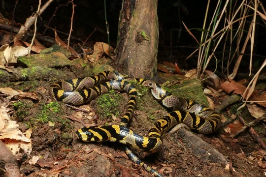
Mandarin RatsnakeEuprepiophis mandarinus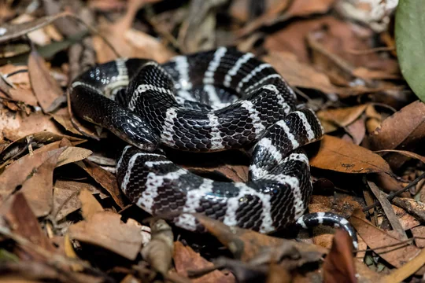
Many-banded KraitBungarus multicinctus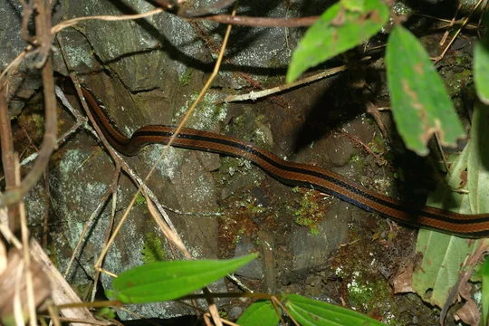
Oriental Coral SnakeSinomicrurus sauteri Oriental RatsnakePtyas mucosa
Oriental RatsnakePtyas mucosa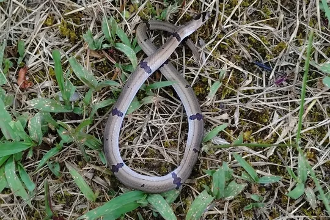
Ornate Kukri SnakeOligodon ornatus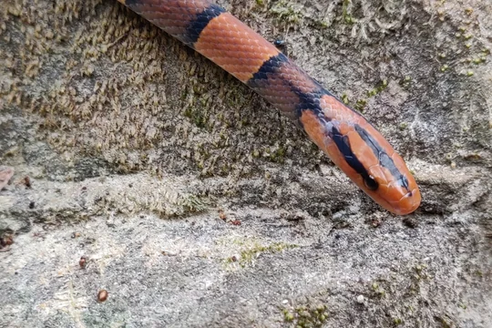
Red Bamboo SnakeOreocryptophis porphyraceus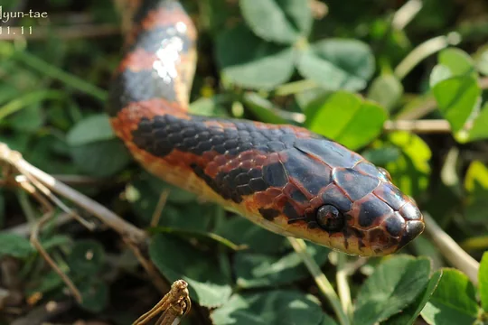
Red-banded SnakeLycodon rufozonatus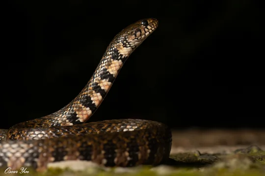
Ringed Keelback Water SnakeTrimerodytes annularis Russell's ViperDaboia russelii
Russell's ViperDaboia russelii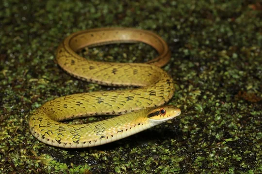
Stejneger's Bamboo SnakePseudoxenodon stejnegeri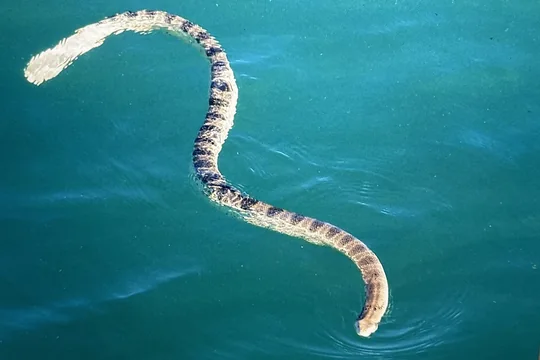
Stoke's SeasnakeHydrophis stokesii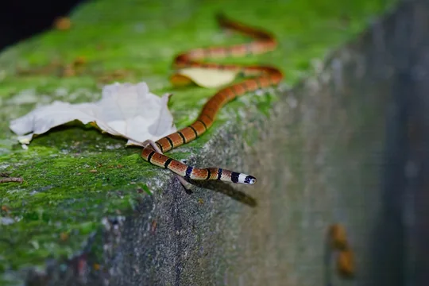
Swinhoe's Temperate Asian CoralsnakeSinomicrurus swinhoei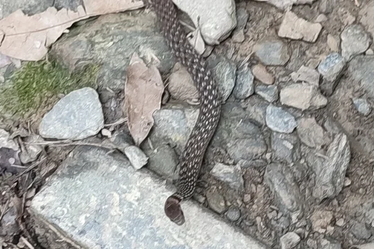
Taiwan KeelbackRhabdophis swinhonis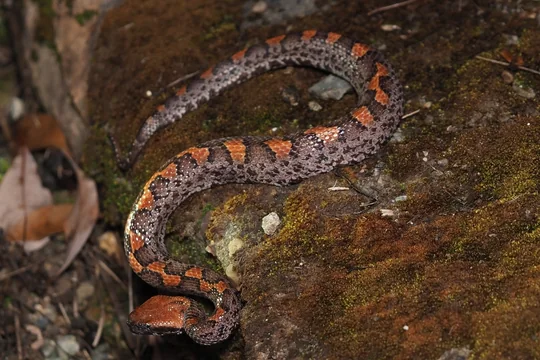
Taiwan Mountain PitviperOvophis makazayazaya Yellow-bellied Sea SnakeHydrophis platurus
Yellow-bellied Sea SnakeHydrophis platurus Yellow-spotted Keelback Water SnakeFowlea flavipunctatus
Yellow-spotted Keelback Water SnakeFowlea flavipunctatus- No photo yetHolarchus konishii
 Zaocys dhumnades
Zaocys dhumnades
No snakes in Taiwan match.
Taiwan’s snakes in numbers
- Families: Colubridae 28, Elapidae 12, Viperidae 8, Homalopsidae 3, Pareidae 3, Xenodermidae 2, Pseudaspididae 1, Typhlopidae 1.
- 12 are recorded in no other country or territory in SnakeList: Atayal Slug-eating Snake, Black Odd-scaled Snake, False Habu, Hatori's Coral Snake, Kikuchi Habu, Kosempo Keelback, Koshun Worm Snake, Maki's Keelback, Oriental Coral Snake, Swinhoe's Temperate Asian Coralsnake, Taiwan Keelback, Holarchus konishii.